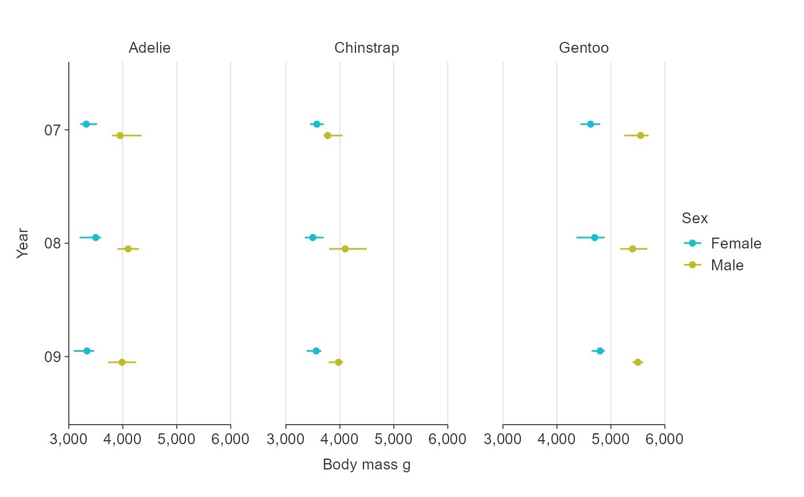

Horizontal pointrange ggplot that is coloured and facetted.
Source:R/gg_hpointrange.R
gg_hpointrange_col_facet.RdHorizontal pointrange ggplot that is coloured and facetted.
Usage
gg_hpointrange_col_facet(
data,
xmiddle_var,
xmin_var,
xmax_var,
y_var,
col_var,
facet_var,
text_var = NULL,
pal = NULL,
pal_na = "#7F7F7F",
pal_rev = FALSE,
alpha_line = 1,
alpha_point = 1,
size_point = 1.5,
size_line = 0.5,
title = NULL,
title_wrap = 75,
subtitle = NULL,
subtitle_wrap = 75,
x_breaks_n = 2,
x_balance = FALSE,
x_expand = c(0, 0),
x_labels = scales::label_comma(),
x_na_rm = FALSE,
x_title = "",
x_title_wrap = 50,
x_zero = FALSE,
x_zero_line = NULL,
y_balance = FALSE,
y_breaks_n = 3,
y_dodge = 0,
y_expand = NULL,
y_labels = NULL,
y_na_rm = FALSE,
y_rev = FALSE,
y_title = NULL,
y_title_wrap = 50,
y_zero = FALSE,
y_zero_line = NULL,
col_breaks_n = 4,
col_cuts = NULL,
col_intervals_right = TRUE,
col_labels = NULL,
col_legend_none = FALSE,
col_method = NULL,
col_na_rm = FALSE,
col_rev = FALSE,
col_title = NULL,
col_title_wrap = 25,
facet_labels = snakecase::to_sentence_case,
facet_na_rm = FALSE,
facet_ncol = NULL,
facet_nrow = NULL,
facet_rev = FALSE,
facet_scales = "fixed",
caption = NULL,
caption_wrap = 75,
theme = gg_theme(gridlines_v = TRUE)
)Arguments
- data
An ungrouped summarised tibble or dataframe in a structure to be plotted untransformed. Required input.
- xmiddle_var
Unquoted numeric variable to be on the x scale. Required input.
- xmin_var
Unquoted numeric variable to be the minimum of the x vertical line. Required input.
- xmax_var
Unquoted numeric variable to be the maximum of the x vertical line. Required input.
- y_var
Unquoted variable to be on the y scale (i.e. character, factor, logical, numeric, date or datetime). If numeric, date or datetime, variable values are bins that are mutually exclusive and equidistant. Required input.
- col_var
Unquoted categorical or numeric variable to colour the pointranges. Required input.
- facet_var
Unquoted categorical variable to facet the data by. Required input.
- text_var
Unquoted variable to be used as a customised tooltip in combination with plotly::ggplotly(plot, tooltip = "text"). Defaults to NULL.
- pal
Character vector of hex codes.
- pal_na
The hex code or name of the NA colour to be used.
- pal_rev
TRUE or FALSE of whether to reverse the pal.
- alpha_line
The opacity of the line. Defaults to 1.
- alpha_point
The opacity of the points.
- size_point
Size of points. Defaults to 1.5.
- size_line
Size of lines. Defaults to 0.75.
- title
Title string.
- title_wrap
Number of characters to wrap the title to. Defaults to 60.
- subtitle
Subtitle string.
- subtitle_wrap
Number of characters to wrap the subtitle to. Defaults to 60.
- x_breaks_n
For a numeric or date x variable, the desired number of intervals on the x scale, as calculated by the pretty algorithm. Defaults to 5.
- x_balance
For a numeric x variable, add balance to the x scale so that zero is in the centre of the x scale.
- x_expand
A vector of range expansion constants used to add padding to the x scale, as per the ggplot2 expand argument in ggplot2 scales functions.
- x_labels
A function or named vector to modify x scale labels. Use function(x) x to keep labels untransformed.
- x_na_rm
TRUE or FALSE of whether to include xmiddle_var NA values. Defaults to FALSE.
- x_title
X scale title string. Defaults to "".
- x_title_wrap
Number of characters to wrap the x title to. Defaults to 50.
- x_zero
For a numeric x variable, TRUE or FALSE of whether the minimum of the x scale is zero. Defaults to FALSE.
- x_zero_line
For a numeric x variable, TRUE or FALSE whether to add a zero reference line to the x scale. Defaults to TRUE if there are positive and negative values in xmiddle_var. Otherwise defaults to FALSE.
- y_balance
For a numeric y variable, add balance to the y scale so that zero is in the centre. Defaults to FALSE.
- y_breaks_n
For a numeric or date y variable, the desired number of intervals on the y scale, as calculated by the pretty algorithm. Defaults to 5.
- y_dodge
The amount to dodge pointranges by along the y axis. Defaults to 0 (i.e. identity).
- y_expand
A vector of range expansion constants used to add padding to the y scale, as per the ggplot2 expand argument in ggplot2 scales functions.
- y_labels
A function or named vector to modify y scale labels. If NULL, categorical variable labels are converted to sentence case. Use function(x) x to keep labels untransformed.
- y_na_rm
TRUE or FALSE of whether to include y_var NA values. Defaults to FALSE.
- y_rev
For a categorical variable, TRUE or FALSE of whether the y variable variable is reversed. Defaults to FALSE.
- y_title
y scale title string. Defaults to NULL, which converts to sentence case with spaces. Use "" if you would like no title.
- y_title_wrap
Number of characters to wrap the y title to. Defaults to 50.
- y_zero
For a numeric y variable, TRUE or FALSE of whether the minimum of the y scale is zero. Defaults to FALSE.
- y_zero_line
For a numeric y variable, TRUE or FALSE of whether to add a zero reference line to the y scale. Defaults to TRUE if there are positive and negative values in y_var. Otherwise defaults to FALSE.
- col_breaks_n
For a numeric colour variable, the desired number of intervals on the colour scale.
- col_cuts
A vector of cuts to colour a numeric variable. If "bin" is selected, the first number in the vector should be either -Inf or 0, and the final number Inf. If "quantile" is selected, the first number in the vector should be 0 and the final number should be 1. Defaults to quartiles.
- col_intervals_right
For a numeric colour variable, TRUE or FALSE of whether bins or quantiles are to be cut right-closed. Defaults to TRUE.
- col_labels
A function or named vector to modify colour scale labels. Defaults to snakecase::to_sentence_case for categorical colour variables and scales::label_comma() for numeric. Use function(x) x to keep labels untransformed.
- col_legend_none
TRUE or FALSE of whether to remove the legend.
- col_method
The method of colouring features, either "bin", "quantile", "continuous", or "category." If numeric, defaults to "bin".
- col_na_rm
TRUE or FALSE of whether to include col_var NA values. Defaults to FALSE.
- col_rev
TRUE or FALSE of whether the colour scale is reversed. Defaults to FALSE.
- col_title
Colour title string for the legend. Defaults to NULL, which converts to sentence case with spaces. Use "" if you would like no title.
- col_title_wrap
Number of characters to wrap the colour title to. Defaults to 25. Not applicable where mobile equals TRUE.
- facet_labels
A function or named vector to modify facet scale labels. Defaults to converting labels to sentence case. Use function(x) x to keep labels untransformed.
- facet_na_rm
TRUE or FALSE of whether to include facet_var NA values. Defaults to FALSE.
- facet_ncol
The number of columns of facetted plots.
- facet_nrow
The number of rows of facetted plots.
- facet_rev
TRUE or FALSE of whether the facet variable variable is reversed. Defaults to FALSE.
- facet_scales
Whether facet_scales should be "fixed" across facets, "free" in both directions, or free in just one direction (i.e. "free_x" or "free_y"). Defaults to "fixed".
- caption
Caption title string.
- caption_wrap
Number of characters to wrap the caption to. Defaults to 75.
- theme
A ggplot2 theme.
Examples
library(dplyr)
library(simplevis)
library(palmerpenguins)
plot_data <- penguins %>%
mutate(year = as.character(year)) %>%
group_by(year, sex, species) %>%
summarise(middle = median(body_mass_g, na.rm = TRUE),
lower = quantile(body_mass_g, probs = 0.25, na.rm = TRUE),
upper = quantile(body_mass_g, probs = 0.75, na.rm = TRUE))
#> `summarise()` has grouped output by 'year', 'sex'. You can override using the
#> `.groups` argument.
gg_hpointrange_col_facet(
plot_data,
y_var = year,
xmiddle_var = middle,
xmin_var = lower,
xmax_var = upper,
col_var = sex,
facet_var = species,
col_na_rm = TRUE,
x_title = "Body mass g",
y_labels = function(x) stringr::str_sub(x, 3, 4),
y_dodge = 0.2)
